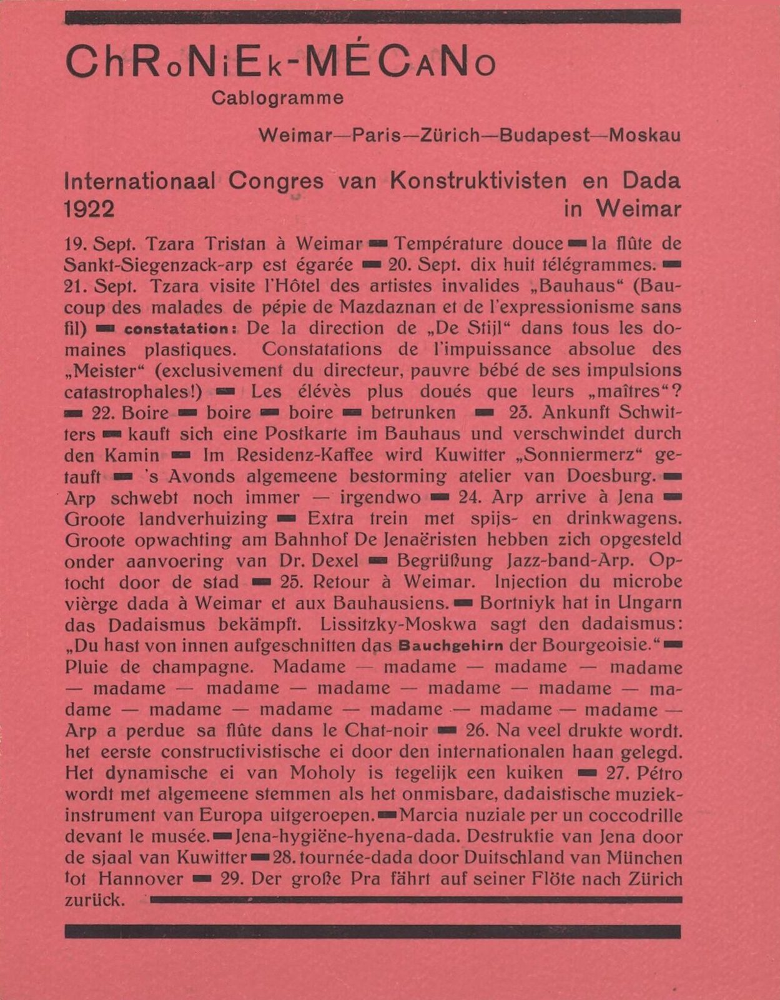

References / Editorial / 446
Mécano no. 3 (Red): “Chroniek-Mécano”, 1922
In his Dada magazine Mécano, Theo van Doesburg reports the 1922 Weimar congress of Constructivists and Dadaists as a mock telegram, under a title that mixes capitals and lowercase letter by letter.
- Source
- Wikimedia Commons: Mécano no. 3, “Chroniek-Mécano” (scan from RKD)
- Creator
- Theo van Doesburg (attributed by Commons and RKD; the page is unsigned)
- Made
- About October 1922 (Commons, after RKD)
- Style
- Dada (agent-proposed, not yet reviewed by a person)
- Moods
- Ironic, irreverent, typographic
- Evidence
- Inspected the Commons scan credited to RKD (1500 × 1922 px original, viewed at 1200 px). Commons does not name the physical copy or its owner. The page is one page of the magazine, not its cover.
- Reviewed
- Rights
- Open license, stored. License: public domain. Rights policy

Context
Commons describes the page as “Chroniek-Mécano”, Mécano no. 3 Rouge, Rood, Rot, Red, about October 1922, by [Theo van Doesburg], source RKD. Commons.
Mécano was the Dutch Dada magazine that van Doesburg published in 1922–1923 under his Dada name I.K. Bonset. Wikipedia: Theo van Doesburg. Each issue was named for a color: Commons also holds the yellow and blue wrappers.


The text reports the International Congress of Constructivists and Dadaists in Weimar in September 1922, with Tzara, Arp, Schwitters, Lissitzky, and Moholy-Nagy. The style record treats the overlap of late Dada and Constructivism.
Observed
- The page is printed in black on a strong pink-red paper.
- The title “ChRoNiEk-MÉCaNo” is a geometric sans-serif in which capitals and small letters alternate inside the word, and some letters drop below the baseline.
- Under it, “Cablogramme” and a line of cities, “Weimar—Paris—Zürich—Budapest—Moskau”, are set in a lighter grotesque.
- The body is one justified block of a plain roman. It switches between French, Dutch, and German, and short heavy black dashes separate the items, as in a telegram.
- Two words, “constatation” and “Bauchgehirn”, are set in a bold grotesque inside the roman text.
- Thick black rules frame the page at top and bottom. One rule ends the last line of text.
Why it belongs
The disorder here is verbal and in the title, not in the layout. The page shows the Dutch side of Dada, where van Doesburg kept the strong rules of De Stijl and put the chaos into the letters and the languages.
Borrow
Alternate capitals and small letters inside one heading word, and keep the body in a plain roman.
Use short heavy black dashes as item separators in running text.
Print a whole page on one strong colored ground with black only.
Measured
Machine-extracted by tools/image-traits.py on . Full measurement.
- Mean chroma
- 0.37
- Palette
- #d66d72 71%
- #8e4a4d 10%
- #c4686d 8%
- #a4575b 7%
- #453234 3%
- #703a3b 2%

